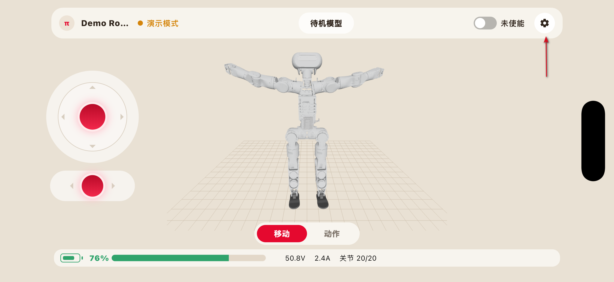
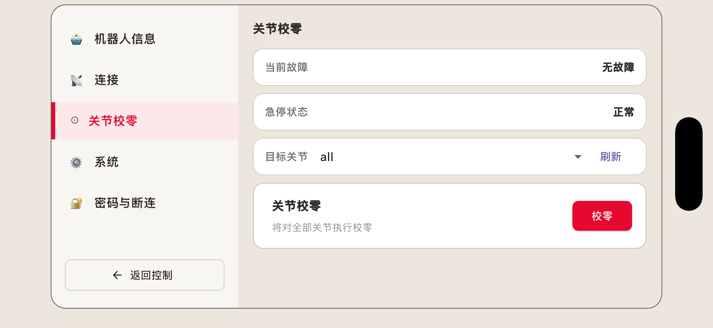
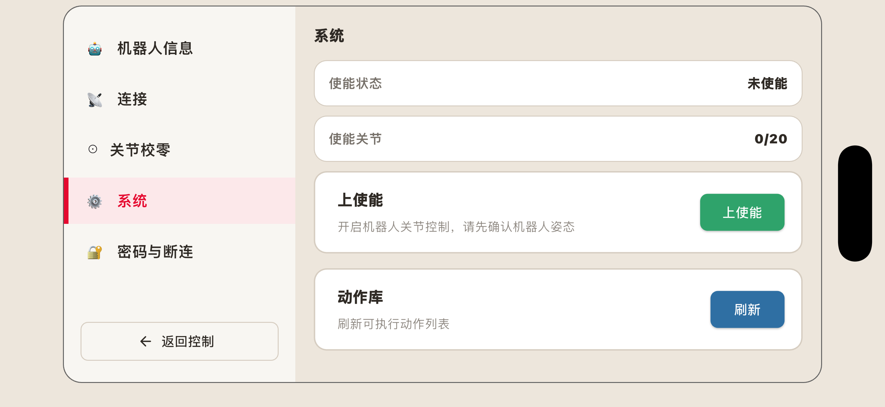
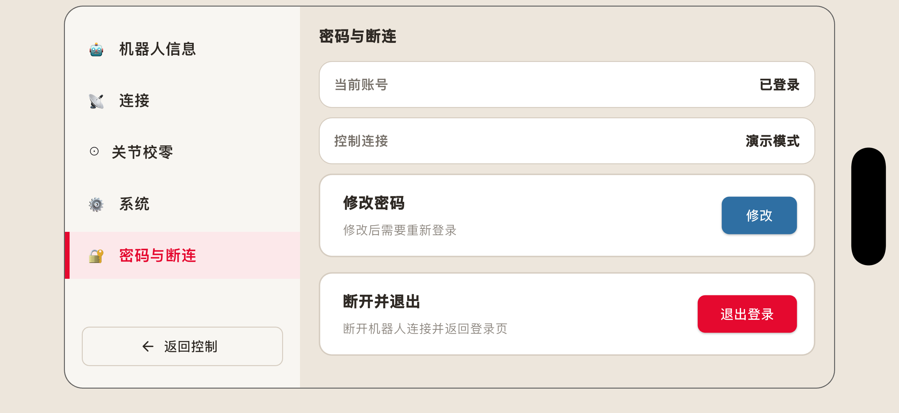

8.7. 机器人设置

设置界面用于查看机器人相关信息、执行关节校零、检查动作库更新、修改密码等功能。
鉴于前文已经介绍过关于机器人信息查看与软件升级的相关内容，此章节只介绍关节校零、系统、密码与断连这三个页面的内容。
8.7.1. 关节校零

关节校零页面用于检测和校准机器人各关节的机械零位，使关节反馈位置与实际位置保持一致。
关节零位发生偏差时，可能导致机器人姿态异常、动作执行不准确或部分动作无法正常完成。
危险
关节校零属于专业维护操作。校零过程中机器人关节可能发生运动，操作不当可能导致机器人倾倒、碰撞或关节损坏。 非专业人员不得擅自执行关节校零。
进入关节校零页面后，可看到：
当前故障：显示当前是否有故障
急停状态：显示急停是否正常
目标关节：用户可在此处选择目标关节。选择好后，可点击下方的“校零”，则将对选择的相应关节进行校零操作。
8.7.2. 系统

系统页面可查看机器人的使能状态与已使能的关节数量。
点击“下使能”可使机器人下使能，该操作会释放机器人关节，请确认机器人处于安全姿态。
点击“动作库”可刷新动作列表。
8.7.3. 密码与断连

该页面可查看当前帐号的登录状态与控制连接模式。
点击“修改”可修改当前帐号的登录密码。
点击“退出登录”会断开与当前机器人的连接，并返回登录页。